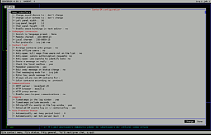

CenterIM
Dieser Artikel wurde für die folgenden Ubuntu-Versionen getestet:
Dieser Artikel ist mit keiner aktuell unterstützten Ubuntu-Version getestet! Bitte diesen Artikel testen und das getestet-Tag entsprechend anpassen.
Zum Verständnis dieses Artikels sind folgende Seiten hilfreich:
CenterIM  ist eine Abspaltung (Fork) von Centericq. Es handelt sich um ein Chatprogramm für die Kommandozeile, das viele verschiedene Chatprotokolle (ICQ, Yahoo!, MSN, AIM, IRC, Jabber, LiveJournal, Gadu-Gadu, RSS-Feed-Reader) unterstützt.
ist eine Abspaltung (Fork) von Centericq. Es handelt sich um ein Chatprogramm für die Kommandozeile, das viele verschiedene Chatprotokolle (ICQ, Yahoo!, MSN, AIM, IRC, Jabber, LiveJournal, Gadu-Gadu, RSS-Feed-Reader) unterstützt.
Neu in CenterIM4 sind einige Bugfixes sowie die Skalierbarkeit der einzelnen Bereiche, wie Benutzerbereich oder der Chatbereich. Die Weiterentwicklung CenterIM5 setzt die Bibliothek libpurple von Pidgin ein. Dadurch können sich die Entwickler wieder mehr auf das Umsetzen neuer Funktionen als um das Anpassen der Protokolle kümmern. Leider ist CenterIM5 nicht in den offiziellen Paketquellen enthalten, kann aber bei Bedarf aus dem Quelltext kompiliert werden.
Installation¶
CenterIM4 kann aus den offiziellen Paketquellen installiert werden [1]:
centerim (universe)
 mit apturl
mit apturl
Paketliste zum Kopieren:
sudo apt-get install centerim
sudo aptitude install centerim
Kompilieren¶
Um CenterIM5 zu kompilieren, folgt man der Anleitung Building CenterIM5 .
Bedienung¶
CenterIM startet man im Terminal [3] oder der Konsole mit dem Befehl:
centerim
Konfiguration¶
 Beim ersten Start öffnet sich CenterIM mit einem Konfigurationsfenster, in dem man verschiedene Einstellungen tätigen kann:
Mit ↑ und ↓ gelangt man zu den Feldern, die man gerne verändern möchte.
Mit ← und → springt man unten rechts zwischen "Ändern" und "Fertig" hin und her.
Hat man "Ändern" und ein Feld gewählt, kann man per ⏎ das Feld ändern.
Hat man "Fertig" gewählt und drückt ⏎ , so gelangt man in den "account manager" (siehe unten).
Diese Daten kann man später auch jederzeit unter "general -> Centerim Konfigurationseinstellungen" ändern.
Des Weiteren lässt sich in CenterIM noch die Höhe/Breite einstellen.
| Name | Übersetzung | Standardwert |
| Left panel width | Breite der Benutzerliste | 53 |
| Log panel height | Höhe von dem Bereich rechts unten | 12 |
| Chat panel height | Höhe des Chatfensters | 10 |
Konfiguration über Konfigurationsdateien¶
Hinweis:
CenterIM lässt sich komplett grafisch konfigurieren, nur bieten die Konfigurationsdateien (meist) mehr Möglichkeiten.
Die Konfigurationsdateien liegen in dem Ordner ~/.centericq (wenn der nicht existiert, evtl. auch in ~/.centerim).
| Name | Konfigurationsmöglichkeiten |
| keybindings | Tastaturbelegung ( z.B.: vi oder emacs binding ) |
| actions | Programmierbare (Shell) externe Events. Kann über das Menü und dann über F6 ausgelöst werden |
| awaymsg-* | * steht für ein Protokoll wie ICQ/Jabber etc. In der Datei steht die Nachricht, welche angezeigt wird, wenn einem jemand schreibt, während man als "weg" gekennzeichnet ist |
| captcha | Prüft mit schwierigen Fragen ob der Gegenüber ein Mensch oder ein Bot ist.. wird im Konfigurationsmenü eingestellt |
| colorsheme | Hier kann man die Farben von CenterIM etwas genauer festlegen |
| config | Konfiguration, sowie Accountdaten (mit Passwort im Klartext) |
| groups | Für die Gruppierung von Kontakten |
| log | Das Log, was rechts unten immer mitläuft ist hier nochmal komplett drin |
| modelist | Speichert die ICQ - Liste ( Nick + Status ) |
| pid | Die Prozessid von CenterIM |
| sounds | Hier kann man eigene Töne für Events definieren |
keybindings¶
Die Zeilen in der Datei sind nach dem Format:
bind <Bereich> <Taste> <Kommando>
Um jetzt z.B. das Strg + X vom Nachricht senden zu einem ⏎ zu ändern muss die Zeile:
bind editor \cx send_message
zu
bind editor <enter> send_message
geändert werden.
Konfiguration der Protokolle¶
Die Protokolle konfiguriert man im "account manager". Ihn bedient man genauso wie das Konfigurationsfenster:
Nach Auswahl eines Feldes (zum Beispiel bei ICQ das Feld "UIN" ) gbt man die betreffenden Daten ein (hier also die ICQ-Nummer).
Hat man die Eingaben abgeschlossen, wählt man per Pfeiltasten "Fertig" und drückt ⏎ .
Diese Daten kann man später auch jederzeit unter "general -> Konten" verändern oder löschen.
Chatten¶
In der linken Spalte sind die Kontakte aufgeführt.
Rechts unten werden Systemnachrichten angezeigt (zum Beispiel, ob sich CenterIM erfolgreich eingeloggt hat).
Darüber befindet sich das eigentliche Chatfenster, in dem man Nachrichten eingeben und mit Strg + X senden kann.
Darüber (also oben rechts) ist der Nachrichten-Verlauf angezeigt.
Ganz unten in grau sind noch hilfreiche Tastenkürzel angegeben.
Mit den Pfeiltasten ↑ und ↓ kann man nun einen Kontakt auswählen und das Chatten mit ⏎ beginnen.
Wichtig: Möchte man nun vom Chatfenster wieder in die Kontaktauswahl gelangen, muss man zwei mal hintereinander Esc drücken. ( Oder man schaltet mit Strg + B bzw. Strg + N durch bis man zurück in das Menü gelangt. So hat man den Vorteil, dass das Chatfenster nicht geschlossen wird sondern nur in den Hintergrund verschwindet. )
Tastenkürzel¶
Tastenbelegungen, wenn kein Chatfenster geöffnet ist:
| Taste/n | Aktion | Taste/n | Aktion |
| M | Öffnet das Kontaktmenü | S | Öffnet das Statusmenü |
| ⇧ + ß | Zeigt die Kontaktdetails | F | Zeigt die Abwesenheitsnotiz des Kontaktes |
| F5 | Zeigt Offline-Kontakte an | Alt + S | Suchen von Kontakten |
Diese und weitere Tasten sind entweder in der grauen Leiste unten angegeben oder in den Menüs hinter den Menüpunkten.
Tipps & Tricks¶
Kontaktdaten versenden¶
Mit CenterIM kann man sehr praktisch Kontaktdaten (also zum Beispiel ICQ-Nummern) an andere Kontakte versenden:
Dafür einfach den Cursor über einen Kontakt bewegen und C drücken, danach erscheint im Fenster oben rechts eine Liste aller Kontakte. Mit kann man die Kontakte ankreuzen und mit ⏎ verschickt man die markierten Kontakte.
Jabber-Chatraum betreten¶
Wie gesagt kann man CenterIM auch nutzen, um bei XServer-Problemen Hilfe zu bekommen. Hier bietet sich zum Beispiel auch der Ubuntuusers-Jabber-Raum an:
Dazu schließt man zuerst das aktuelle Chatfenster mit 2x Esc .
Dann wechselt man mit F4 oder G ins Hauptmenü.
Hier wählt man "Kanal/Konferenz beitreten", wählt im Feld "Netzwerk" "jab" und trägt in das Feld "Name/Titel" "ubuntu@conference.ubuntu-jabber.de" ein.
Sonstiges¶
Mit Strg + L kann man CenterIM komplett neu zeichnen lassen. Das entfernt vom Programm falsch gesetzte Zeichen.
Hat ein Kontakt Geburtstag, so erscheint hinter seinem Nickname ein Smiley

Das Zeichen ^ in der Erklärungsleiste ganz unten steht für Strg
Um mit anderen Deutschen Clients chatten zu können, empfiehlt es sich "ISO-8859-15" als Schrift-Enkodierung im Hauptmenü einzustellen.
 Programmübersicht
Programmübersicht- Erstellt mit Inyoka
-
 2004 – 2017 ubuntuusers.de • Einige Rechte vorbehalten
2004 – 2017 ubuntuusers.de • Einige Rechte vorbehalten
Lizenz • Kontakt • Datenschutz • Impressum • Serverstatus -
Serverhousing gespendet von